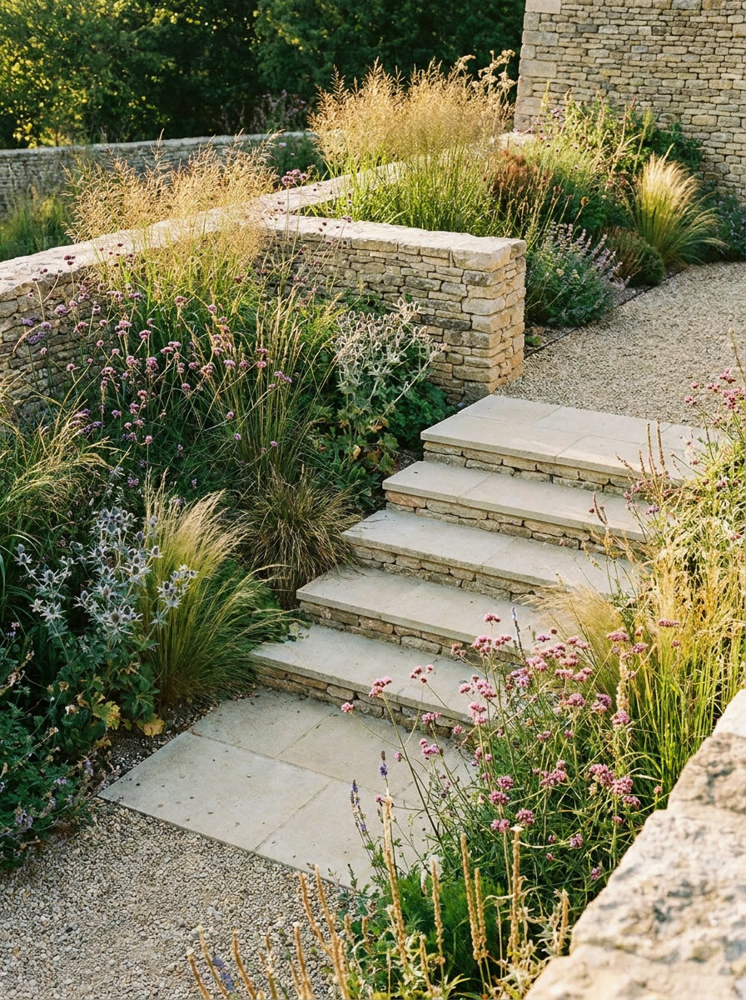
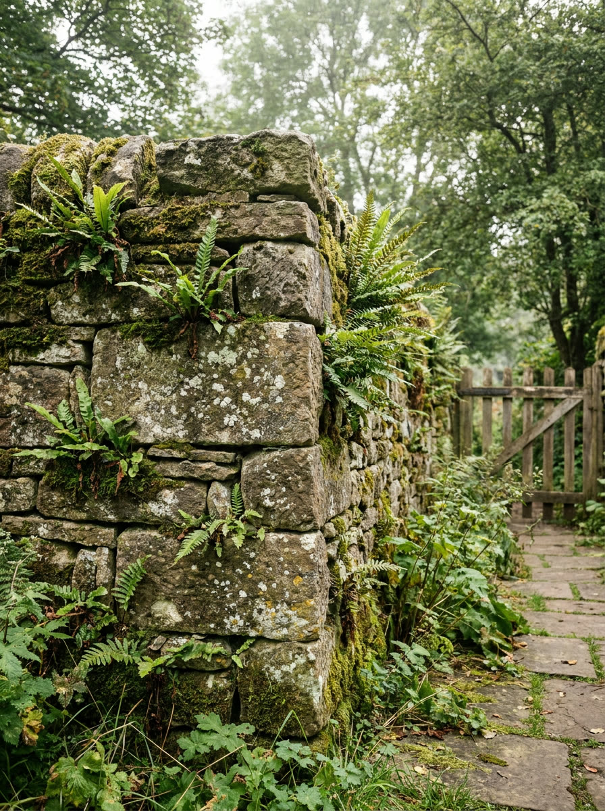
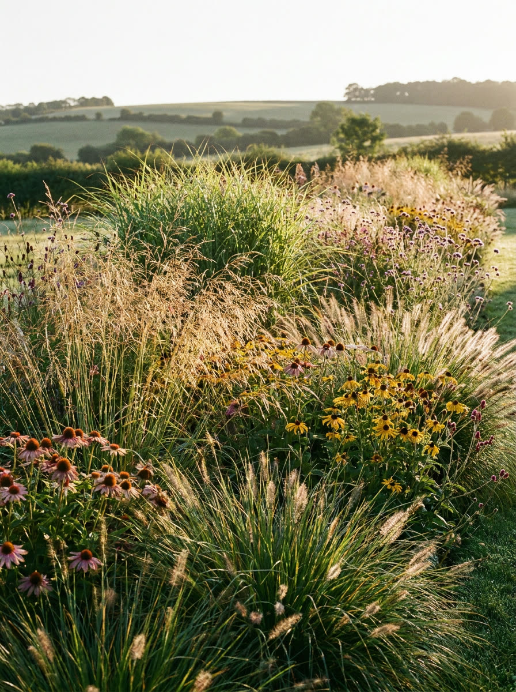

The work
Garden design and hard landscaping across the Marlborough Downs. Drystone walls, stone terraces and planting that settles in rather than shows off.



We measure the fall of the site before anything is drawn, because on a sloping chalk garden the levels decide the design. You get plans you could build from, and they are yours whoever builds it.
Drystone walling laid without mortar so it moves with the ground instead of cracking. Local stone paving, steps and terracing, built by the people who drew it.
Thin alkaline soil rules out half the catalogue, so we plant what actually thrives on the Downs and space it to close up in three seasons rather than look finished on day one.